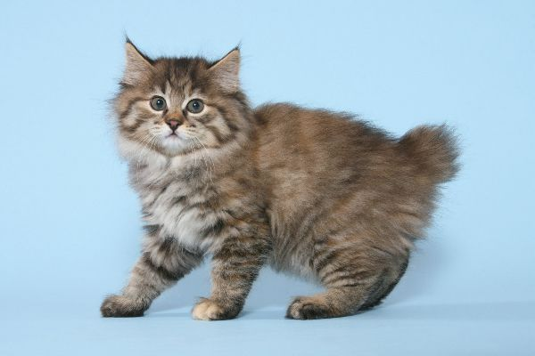
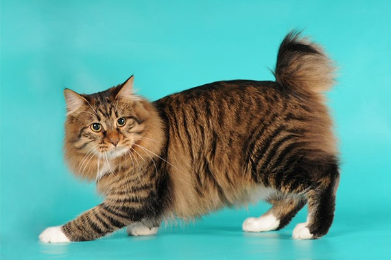
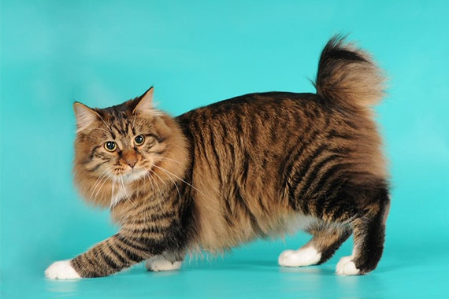
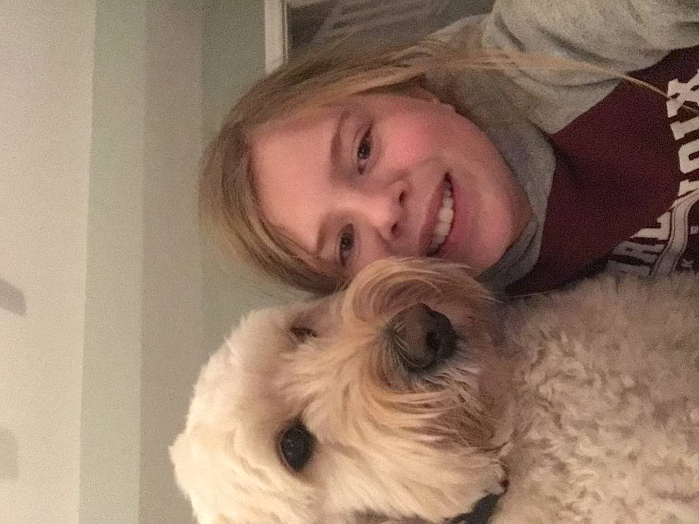
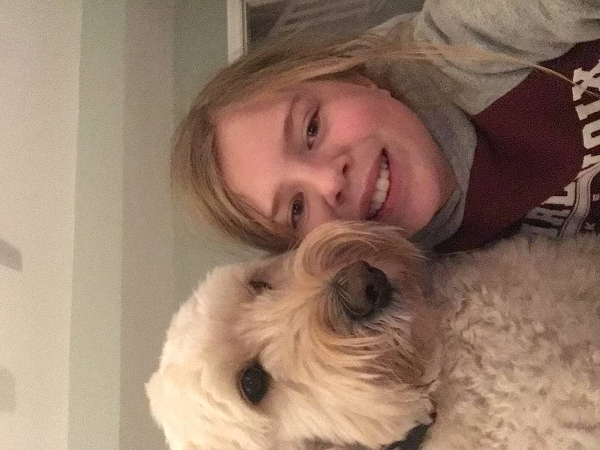

Subin

One of my earliest memories was spending time with a newly born Subin, So in a way,we grew up together. Therefore, from going to the store at the end of the road to eating together, we did everything together.
Subin was somehow not bothered by vaccum cleaners. Even though the loudness of it was able to scare any animals away, Subin enjoyed the chaos of it, opting to even sit on the handle as we vaccum.
Subin's Photo Gallery
 

Likes
- Hitting people's faces
- Sleeping under the sun
- Laying on a keybaord
Cheeto

Cheeto is a cat who likes to eat a lot and play a lot. He has an obsession with his grandpa (human) and tries to get outside every single day. If he isn’t causing problems, he is usually hiding in a seven foot tall cat tree and sleeping
Another name for Cheeto is Chicken, because sometimes he sits very scrunched up and ends up looking like a rotisserie chicken. He was nicknamed this by one of his friends, and now he understands it as his own name. He is about six years old and still acts like a younger cat, despite being middle-aged.
Cheeto's Photo Gallery


Likes
- Treats
- Exploring
- My Dad
Milktea

Milktea is a Scottish fold with a personality of a princess. She loves her veggies and refuses to eat anything dropped on the ground. She makes it clear when she has a demand of any sort by complaining in a loud, distinguished manner. If what she says could be translated, it probably would be, “This is atrocious, the water container has been empty for the 3rd time this week. I want to see the manager.”
Despite her cuteness and royalty, she actually suffers from a genetic disorder intentionally brought upon by humans. I highly advise against keeping a Scottish fold because they are in constant pain when they reach around 2 years old. Cartilage accumulates around her paw joints and tail joints and it becomes painful for them to even walk. She is living evidence of human’s cruelty of breeding animals to look pretty while sacrificing the animals’ health.
Milktea's Photo Gallery


Likes
- She loves individual corn kernels served on human hands
- She enjoys sitting royally on suitcases to claim ownership of her humans
- She prefers to be alone and sit on soft surfaces in her free time
Leo

Leo is a very hyper labradoodle who enjoys running around and meeting new people. Leo recently turned six back in July, and received two toys for his birthday which he has already destroyed. Leo also enjoys laying around the house, his favorite spots being my parents bedroom and the living room couch.
Leo is a big fan of when the mailman comes because that means he will get a treat. At bedtime, Leo waits for both of my parents to get into bed before he goes to bed. He thinks he needs to guard them while they are both still awake.
Leo's Photo Gallery
 



Likes
- Naps
- Food
- Going on walks
Jax

Jax is a kitten, about five months old that I found this summer at a gas station while traveling to Marquette, Michigan. He was scared and malnourished, crying in the parking lot. I took him with me and after some healthy meals and a trip to the vet he is doing great!
My roommates and I just recently moved and Jax has been having a hard time getting used to the large house since we were previously living in a small apartment. Jax is incredibly playful and loves to run around, but when he is sleepy he is happy to be held.
Jax's Photo Gallery


Likes
- Toys
- Going outside
- Attention
York

York loves to stay active and go on long walks by his house. He also enjoys chewing on his large assortment of toys. His favorite toy is his squeaky pig. York’s favorite food is sausage, but cheese is another favorite.
York is a very sociable dog and is a licensed therapy dog. He frequently visits nursing homes and other places in an attempt to raise peoples’ spirits. When it comes to bedtime, York prefers to sleep alone in his favorite blue dog bed. He will always be the first to get up in the morning. Photo gallery
York's Photo Gallery


Likes
- Food
- Playing
- Toys
Bear

Bear is a lazy, food-loving dog that is sometimes playful. His favorite activity is lying in the sun on his side and lounging. He enjoys playing with his toys and loves to fetch them when you throw them, but eventually, he gets bored and just stops fetching them and lays down.
Bear is also scared of a lot of things. He doesn’t like water (showers and even rain) or getting his nails clipped, and he’s sometimes even so lazy that he’ll just stop walking and sit down until you turn around and go back home.
Bear's Photo Gallery


Likes
- Food
- Laying on Bed
- Fetch
Back To The Top